1.鼠标右击软件压缩包，选择解压到CAD2017。(文末附下载链接)
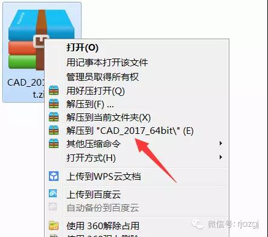2.双击打开AutoCAD_2017_64bit
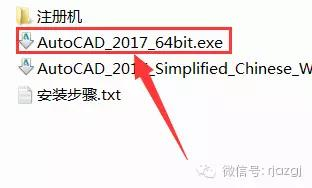3.点击更改,选择解压目标文件夹，可在D盘或其它盘里面新建一个CAD2017文件夹，然后点击确定。
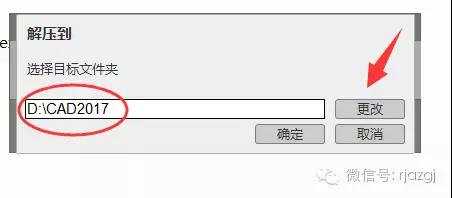4.点击安装。
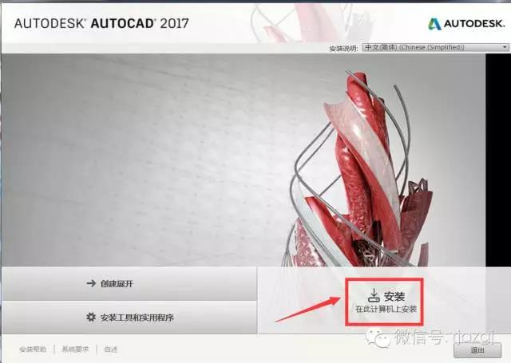5.选择我接受后，点击下一步。
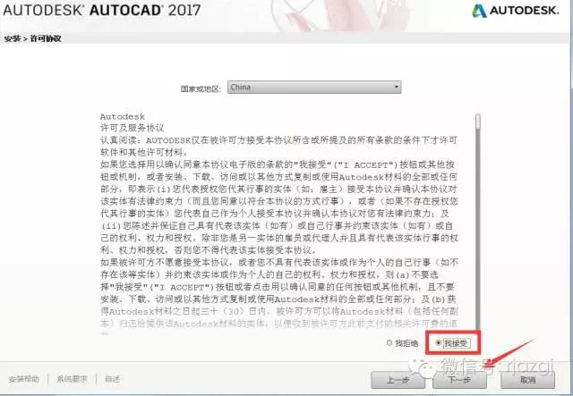6.点击浏览更改软件安装路径：建议安装到除C盘以外的磁盘，可选择之前在D盘或其它盘里面新建的那个文件夹CAD2017。然后点击安装。
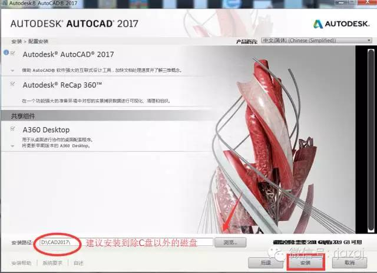7.安装中(可能需要半小时左右)。
8.点击完成。
9. 双击打开电脑桌面上的CAD2017软件图标。
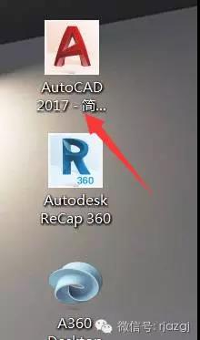10.点击输入序列号。

11.先点击我同意，再点击激活。
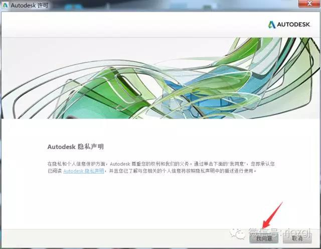 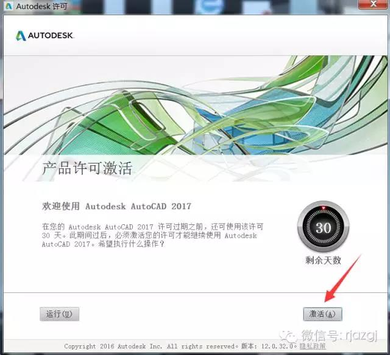12.输入序列号：666-69696969 产品密钥：001i1
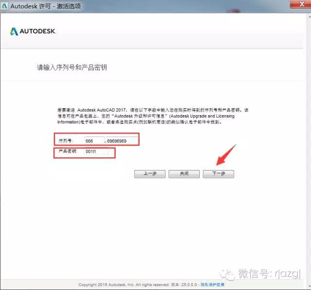13.如出现下图所示，则需要先关闭软件，再重新打开软件后进行激活。
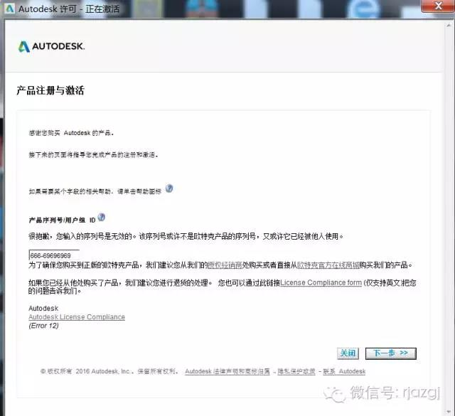14.选择我具有Autodesk提供的激活码。
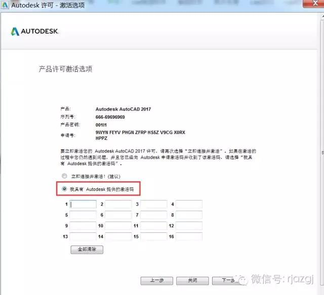15. 双击打开安装包解压出来的注册机文件夹，然后鼠标右击注册机程序xf-adsk2017_x64.exe，选择【以管理员身份运行】。温馨提示：若打开注册机文件夹后里面没有注册机程序，则需要关闭你电脑杀毒软件和防火墙后再重新解压安装包后打开。
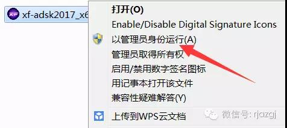16.把申请号复制到注册机里面的Request中（记得删除原Request中的内容），先点击Patch，再点击Generate后复制Activeation中生成的激活码，然后粘贴激活码至我具有Autodesk提供的激活码方框中。最后点击下一步即可。
提示：复制和粘贴的时候只能用快捷键“Ctrl+C”和“Ctrl+V”
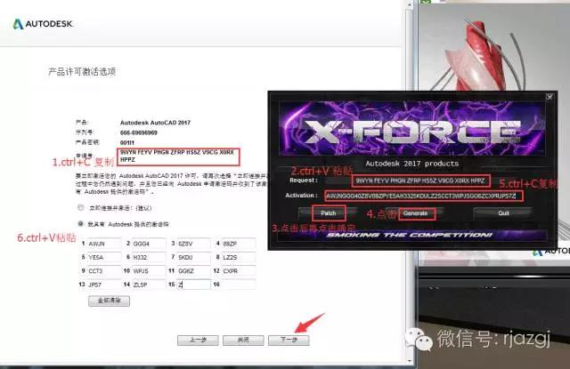17.点击完成。
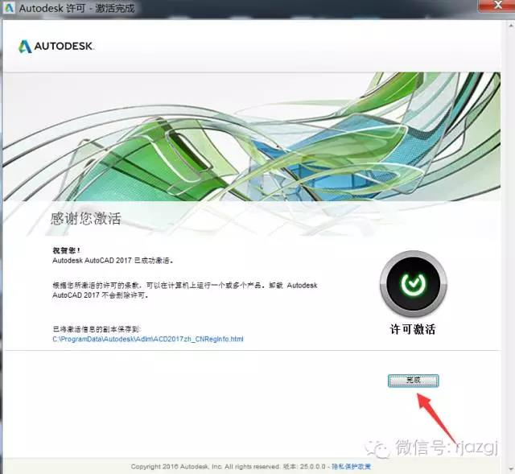安装包下载：
CAD2017/64位下载地址：
链接: AutoCAD 64位
密码: sgyp
CAD2017/32位下载地址：
链接: AutoCAD 32位
密码: wmi1